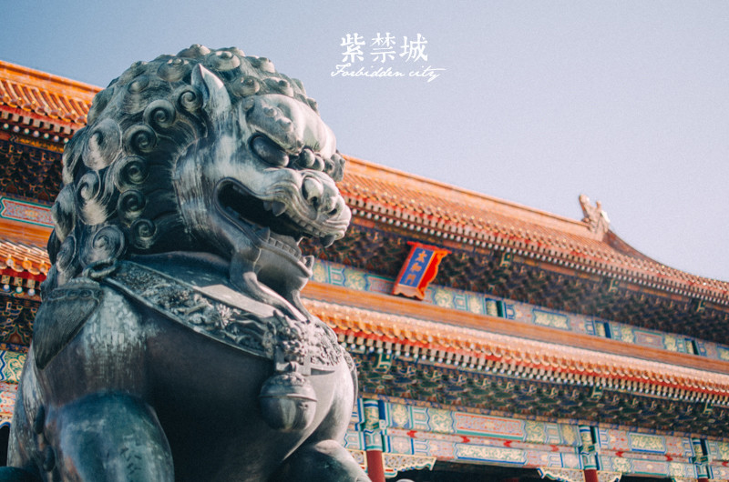

北京预览

图：故宫太和殿。By 小憩
故宫
位于北京城的正中心，是北京最有皇家气息的典范，中国最著名的博物馆。前身为明清两代的皇家宫殿，现在为故宫博物院，馆藏上百万件文物，在故宫内进行定期与临时的展览。
北京烤鸭
最著名的一道北京菜，有“挂炉”和“焖炉”两大派不同的做法，吃烤鸭最有名的餐厅是全聚德和便宜坊，一些家常菜馆也供应烤鸭。价格从60元至二、三百元不等。
胡同儿
北京传承自元代的建筑形式，因为城市建设而数量急剧减少。比较著名的南锣鼓巷、五道营、国子监、杨梅竹斜街都是经过专门商业化改造的文化街区。这些景点附近会有更多本地人居住的胡同，可以骑车或步行探访。
购物
王府井曾经作为北京旅游的商业代表，是旅行者必到的地方。在购物方面北京提供非常现代、国际化的选择：国贸商圈、三里屯商圈、西单商圈、崇文门商圈等等，都是品牌齐全的购物地之选。
旅行前注意事项
堵车
北京交通的拥堵程度往往超乎你的想象，选择好出行时段和交通工具是躲避拥堵的唯一办法。地铁是能保证出行时间的最佳选择，但是在高峰时间里，能不能挤上去也是要看运气的。在共享单车非常发达的今日，北京城里的景点之间靠单车串联，其实不失为一种节约时间又环保的方式。
天气状况
由于城市的发展，北京难以避免地遭受空气污染的困扰。如果遇到空气质量欠佳的日子，便利店都能买到口罩。在春天，北京会出现“飘柳絮”的情况，过敏者应格外注意。夏季是北京的雨季，出行需要携带雨伞。
最佳旅行时间
春天和秋天是北京最适合旅行的季节。
春季（3-5月）：万物复苏，北京优美的市政园林景观会让你感受春日的气息。从中南海南墙外的玉兰花，到二环路边的桃花与迎春花，这个季节是在北京逛公园的好季节。但是早晚温差较大，出门还是要多带件外套。
夏季（6-8月）：北京夏季炎热，近些年多发“桑拿天”，让暑气更重，酷热难耐。不过7、8月份多雨，如果能在傍晚赶上一场短暂的雷雨，那么就能度过一个舒适的晚上。郊区的温度较低，可以考虑前往京郊的景点旅行。
秋季（9-11月）：秋天是北京最好的季节，晴朗的日子里天高云淡，气温舒爽，非常适合旅行。香山的红叶名声在外，摄影爱好者可以在这个季节专程到访。
冬季（12-2月）：位于北方的北京在冬日别有一番情调，特别是大雪之后的故宫等皇家园林，网上更有“一场雪将北京带回北平”的说法。冬天也是在北京吃火锅的最好季节，但是这个季节，特别是从南方北上，一定要注意防风保暖，羽绒服和雪地靴都是保暖的标配。
建议游玩天数
3－5天。
北京的著名景点都比较集中，所以在北京城区游玩3天即可。如果你想体验周边近郊的风景，每去一处可以增加一天的旅行时间。